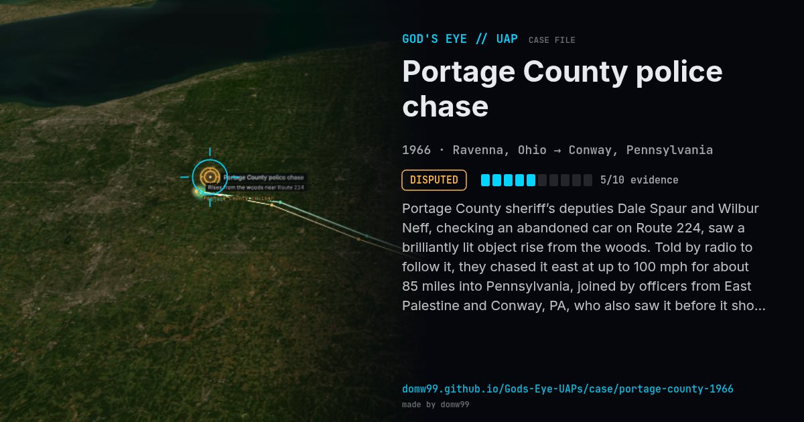

Portage County police chase
DISPUTED

Portage County sheriff’s deputies Dale Spaur and Wilbur Neff, checking an abandoned car on Route 224, saw a brilliantly lit object rise from the woods. Told by radio to follow it, they chased it east at up to 100 mph for about 85 miles into Pennsylvania, joined by officers from East Palestine and Conway, PA, who also saw it before it shot straight up.
Explanation
Project Blue Book (Maj. Hector Quintanilla) concluded the officers first saw the Echo satellite and then Venus; the officers and Rep. William Stanton rejected this.
What was seen
Shape: Bright disc-shaped light, "as big as a house"
Witnesses: Deputies Dale Spaur & Wilbur Neff, officers in three towns
Duration: ~1 hour; ~85 miles